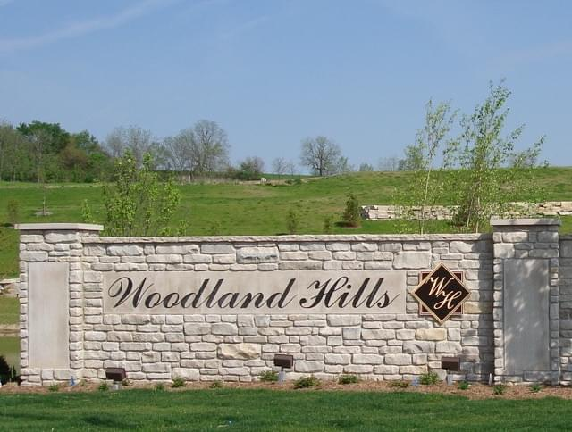
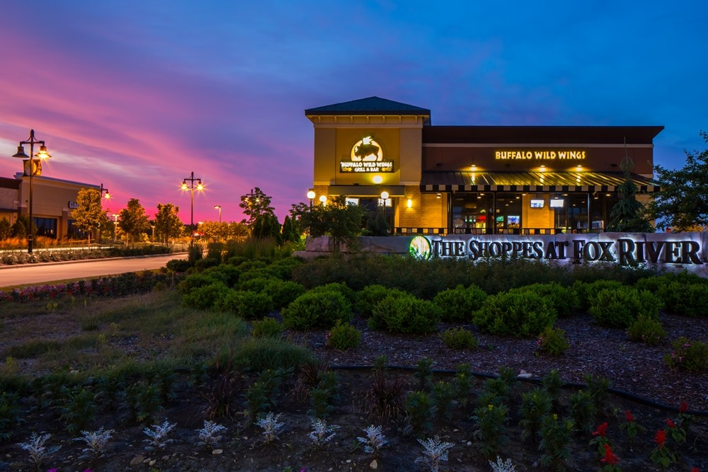

Site Developments
- 
Belman Homes Subdivisions
Waukesha, WI
Belman Homes specializes in custom built homes in Southeastern Wisconsin. Over the past twenty-plus years we’ve had the privilege of playing a part in many of their developments. Deer Trails, Woodland Hills, Fox River, and Cider Hills are a few of their subdivisions in Waukesha County. Globe Contractors installed the sanitary, storm, and water main systems, along with the sanitary laterals and water services to each lot. When doing work for site developers, we strive to get our work done as efficiently as possible, with the best interests of the project owner in mind from start to finish.
- 
The Shoppes at Fox River
Waukesha, WI
The Shoppes at Fox River is a 369,774 square foot site development that is home to 27+ stores including Ulta Salon, Target, TJ Maxx, Pick N’ Save, Hobby Lobby, and Petco, to name a few. The work consisted of over 3,300 LF of 8” sanitary sewer, with over 1,400 LF of 6” sanitary laterals to the future store lots. Nearly 8,000 LF of 12” water main was installed along with over 1,500 LF of 6” water services. The storm sewer varied from 6” to 54” diameter and together massed over 10,800 LF, along with 91 total storm manholes.
Northwestern Mutual Tower
Downtown - Milwaukee, WI
The Northwestern Mutual Tower broke ground in 2014 and is set to be completed in late 2017. It’s a550-foot tall, 32 story skyscraper, which will make it the second tallest building in the Milwaukee skyline. The footprint of it sits where another building used to stand. Utilities ran through the property and Globe Contractors was hired to reroute the water main and combined sewer. Our work consisted of over 1,600 LF of combined sewer ranging in size from 12”-42” at depths of up to 23 feet, a total of 19 manholes and catch basins, and 750 feet of 36” ductile iron water main. A 31-foot length needed to be auger bored in order to avoid a major duct package, this work completed by our sister company, Bore Master.